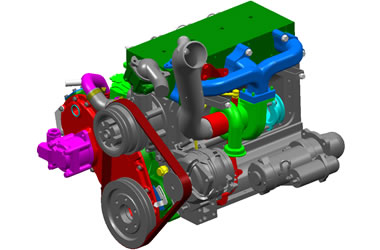

Motores Leves
Modelo Ragon WZ
Excelente performance com elevado toque e baixo custo de manutenção
Principais Caracteristicas
- Estrutura de motor projetado para 180 bar (pressão de combustão);
- 3 válvulas por cilindro;
- Trem de engrenagem traseiro;
- Sistema de injeção com 1.600 bar;
- Compressor de ar (opcional);
- Turbo Wastegate (TGV opcional);
- Sistema de pós-tratamento de gases;
- Segmento: Veicular;
- Aplicação: Caminhões leves, mini, micro ônibus;
- Pipapes e vans;
| Emissões | Euro IV / Proconve P6 |
|---|---|
| Confirgurações | 4 cilindros, em linha |
| Peso Seco | 230 KG |
| Altura x Larg x Comp | 767 x 727 x 547 mm |